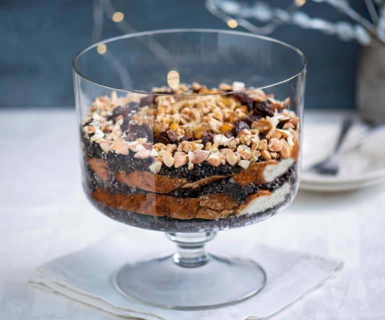
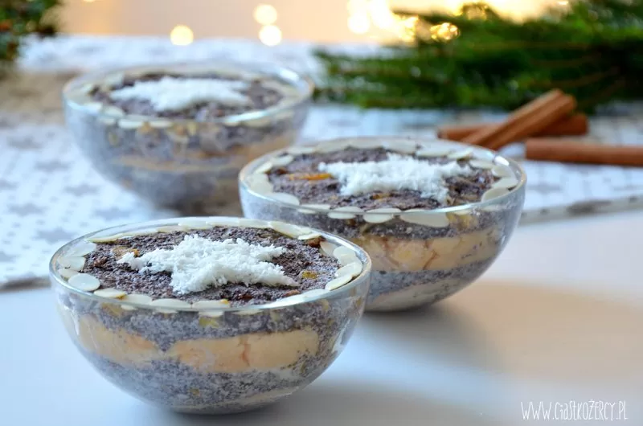

Składniki
- ok. 1 litr mleka
- 250g suchego, zmielonego maku
- 100g orzechów laskowych
- 100g orzechów włoskich
- 120g rodzynek
- ok. 80g cukru
- 2 łyżki masła
- 2 łyżki miodu
- parę kropli olejku migdałowego
- bułki pszenne, chałka, sucharki

Przygotowanie
- Orzechy posiekać. Odstawić na bok.
- Bułki pokroić na cienkie plasterki. Odstawić na bok.
- Mak wsypać do garnka, zalać mlekiem i dodać masło. Zagotować. Dalej gotować ok. 15 min. na małej temperaturze, ciągle mieszając. Kolejno dodać miód, cukier do smaku, parę kropli olejku migdałowego, orzechy i rodzynki.
- W misce ułożyć pierwszą warstwę bułki. Na bułkę wyłożyć gorącą masą makową. Ułożyć kolejną warstwę bułki i na nią wyłożyć masę makową. Na przemian układać plasterki bułki i masę makową, aż do wyczerpania składników. Na górze powinna być warstwa maku. Całość docisnąć i wyrównać powierzchnię. Pozostawić do ostygnięcia.
- Następnie przykryć miskę (np. folią spożywczą) i wstawić do lodówki na całą noc, aby bułka zmiękła od masy makowej.
- Z góry udekorować posiekanymi bakaliami. Gotowe makówki powinny mieć gęstą i zwartą konsystencję.
